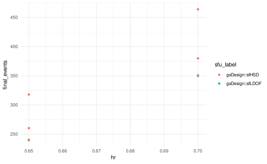

gsDesignTune provides two ways to handle dependencies between spending functions and their parameters:
- Preferred: use
upper = SpendingSpec/SpendingFamilyandlower = .... - Advanced: use
tune_dep()to express dependencies between any arguments.
Preferred UX: SpendingFamily
job1 <- gsSurvTune(
k = 3,
test.type = 4,
alpha = 0.025,
beta = 0.10,
timing = c(0.33, 0.67, 1),
hr = tune_values(list(0.65, 0.70)),
upper = SpendingFamily$new(
SpendingSpec$new(sfLDOF, par = tune_fixed(0)),
SpendingSpec$new(sfHSD, par = tune_seq(-4, 4, length_out = 3))
),
lower = SpendingSpec$new(sfLDOF, par = tune_fixed(0)),
lambdaC = log(2) / 6,
eta = 0.01,
gamma = c(2.5, 5, 7.5, 10),
R = c(2, 2, 2, 6),
T = 18,
minfup = 6,
ratio = 1
)
job1$run(strategy = "grid", parallel = FALSE)
res1 <- job1$results()
head(res1[, c("hr", "upper_fun", "upper_par", "final_events")])
#> hr upper_fun upper_par final_events
#> 1 0.65 sfLDOF 0 239.6915
#> 2 0.70 sfLDOF 0 349.7268
#> 3 0.65 sfHSD -4 240.4291
#> 4 0.70 sfHSD -4 350.8029
#> 5 0.65 sfHSD 0 260.3331
#> 6 0.70 sfHSD 0 379.8442Advanced: tune_dep()
job2 <- gsSurvTune(
k = 3,
test.type = 4,
alpha = 0.025,
beta = 0.10,
timing = c(0.33, 0.67, 1),
hr = tune_values(list(0.65, 0.70)),
sfu = tune_choice(sfLDOF, sfHSD),
sfupar = tune_dep(
depends_on = "sfu",
map = function(sfu) {
if (identical(sfu, sfLDOF)) tune_fixed(0) else tune_seq(-4, 4, length_out = 3)
}
),
sfl = sfLDOF,
sflpar = 0,
lambdaC = log(2) / 6,
eta = 0.01,
gamma = c(2.5, 5, 7.5, 10),
R = c(2, 2, 2, 6),
T = 18,
minfup = 6,
ratio = 1
)
job2$run(strategy = "grid", parallel = FALSE)
res2 <- job2$results()
head(res2[, c("hr", "sfu", "sfupar", "final_events")])
#> hr sfu sfupar final_events
#> 1 0.65 gsDesign::sfLDOF 0 239.6915
#> 2 0.65 gsDesign::sfHSD -4 240.4291
#> 3 0.65 gsDesign::sfHSD 0 260.3331
#> 4 0.65 gsDesign::sfHSD 4 317.9218
#> 5 0.70 gsDesign::sfLDOF 0 349.7268
#> 6 0.70 gsDesign::sfHSD -4 350.8029
job2$plot(metric = "final_events", x = "hr", color = "sfu")
Export a report
report_path <- tempfile(fileext = ".html")
job2$report(report_path)
report_path
#> [1] "/tmp/RtmpAkZgZx/file1e036060844c.html"